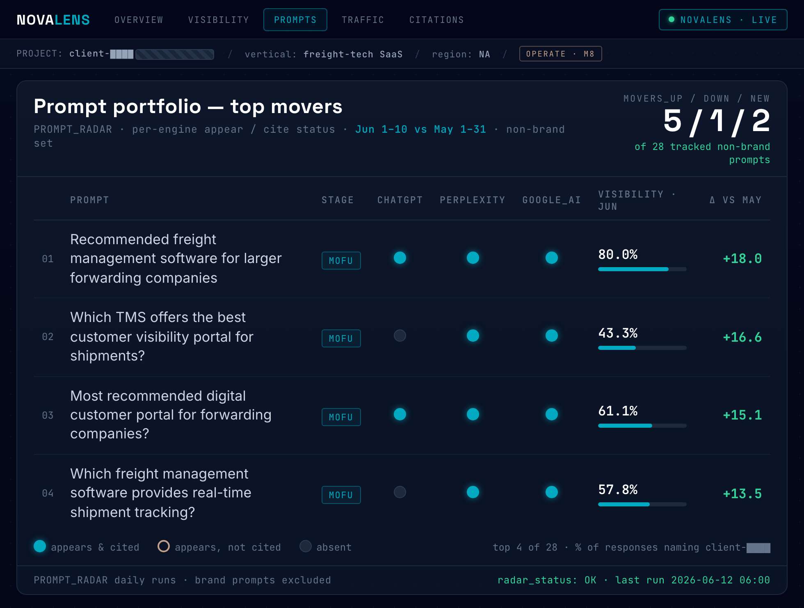

We help brands grow on the agentic internet.
We know how to get your brand chosen by AI
Get your brand
chosen by AI.
Buying decisions moved inside AI answers this year.
AI now answers the query before anyone reaches a link. "The click is now optional." — Amanda Natividad, SparkToro
Google searches showing an AI answer
One in four Google searches now opens with an AI answer, nearly double a year ago.
Conductor · 21.9M queries
US searches ending without a click
Two-thirds of US searches now end without any click.
SparkToro · clickstream
Conversion rate by traffic source
AI-referred visitors convert 42% more often than other traffic.
Adobe Analytics
Classic SEO: ten blue links compete for a click.

Google, "what is seo" — ranked pages, every visit a click away.
AI SEO / AEO / GEO: the AI answer mentions a few brands.

Google AI Overview, "aeo agency singapore" — the answer names Novastacks. Cited, not ranked.
Winning AI answers takes three disciplines. Most have one. Some have two. We run all three.
Expertise
Augmentation
Engineering
three
Run all three together and your brand becomes the answer AI gives — not just a link it lists.
Your strategy is set by senior operators, not handed to junior staff.
Tina Chu
Founder & CEO
Strategy. 20 years of marketing leadership at Expedia, Tencent and Klook sets your direction right the first time.
Builder & trainer. Certified SMU AI-marketing trainer; runs corporate agentic-system workshops for brands including tiket.com.
Eki Riandra
Head of Search & Commerce
Search authority. Ex-Tech SEO Head of Traveloka and Tokopedia; Google Product Expert.
Proven with Google. Co-authored the Tokopedia growth case study with Google.
The Source & Echo Method is Novastacks' own AEO methodology.
Every AI answer is assembled from content worth quoting — the source — and from what the rest of the internet says about you — the echo. We engineer both, with five systems that are built and running, not advised.
Prompt Radar Pro finds every question worth winning. Two source systems and the Echo Network go win them. The Proof Loop measures daily and reports in pipeline.

One buyer prompt through the method: the radar detects it, the source and echo tracks win it, the loop proves it.
Prompt Radar Pro: built from your first-party data — the most intelligent system for query generation.
Under 20% of brands are cited by both ChatGPT and Google for the same question — visibility only counts if it is tracked per engine.
Source track
Novastacks
Three proprietary intelligence layers — first-party buyer signal, search demand, and product-market fit — run through two deterministic engines: one grounds demand into a topical knowledge graph and fans out the real questions AI engines ask; the other ranks them to the tracked set. Every prompt is observed from how engines actually retrieve, never guessed — then tracked daily per engine.
three intelligence layers·topical knowledge graph·two deterministic engines·tracked per engine

Live in NovaLens. The week’s top visibility movers: per-engine cited / appears / absent status across the tracked prompt set.
Answer Architecture: proven in your server logs, not promised in an audit.
Source track
Answer Architecture
SYS·02Most agencies
Lead with content and PR because deep technical work is scarce; schema is a checkbox.
Novastacks
Entities, schema, llms.txt and passage structure led by the ex-Tech SEO Head of Traveloka and Tokopedia — then validated in your server logs, where AI crawler reads are visible.
entity disambiguation·schema / JSON-LD·llms.txt·passage extraction·AI bot log analysis

System view. Schema brackets, entity tags and passage-first structure on a page, with AI crawler reads confirmed in the logs.
First-Party Answers: your data, not recycled content.
Source track
First-Party Answers
SYS·03Most agencies
Say unique data earns citations, but never say where it comes from; ship AI-written volume.
Novastacks
We mine the underutilised proprietary data in your business — sales and support conversations, usage benchmarks, pricing intelligence — and turn it into tiers of content that shape how AI describes and recommends you. Engines cite what they cannot find elsewhere.
first-party data mining·sales-transcript insights·comparison pages·refresh cadence

System view. Sales calls, win/loss notes and support tickets assembled into comparison pages no competitor holds — the pages AI ends up citing.
Echo Network: the exact domains AI cites, not a generic media list.
60% of AI Overview citations come from URLs outside the top 20 organic results, and 85% of brand mentions sit on third-party pages. The echo decides who gets recommended.
Echo track
Echo Network
SYS·04Most agencies
Generic link building against a standard media list.
Novastacks
Citation mining first: the outreach list is the exact set of domains each engine already cites for your prompts — and unlinked mentions count.
citation mining·digital PR·unlinked brand mentions·review platforms

The outreach table, live. Eleven publisher targets mined from AI citations — each with the exact list to enter and the placement model quoted. Client masked.
Proof Loop: daily agents, not quarterly reports.
Operate
Proof Loop
SYS·05Most agencies
Quarterly audits, monthly PDFs, and a junior account team running execution.
Novastacks
Agents pull visibility data daily into NovaLens; senior strategists carry every meeting decision straight into execution.
daily prompt runs·NovaLens platform·AI share of voice·pipeline attribution

Live in NovaLens. The morning traffic read: daily clicks, brand / non-brand split, pacing against last month.
In three months we took a freight-tech SaaS from invisible to fastest-rising in AI answers. 
The CEO saw it in the pipeline before he saw it in a dashboard.
The email

Inbound enterprise lead — the prospect found them through ChatGPT, which recommended them over the market leader. January 2026.
The visibility that drove it

AI visibility climbing across every engine — Google AI Overviews, Perplexity and ChatGPT — tracked live in NovaLens through the engagement.
1 of the client's 6 most recent enterprise wins started with an AI shortlist.
“I had a conversation with AI… it narrowed it down to a top five. You guys were a top two.”
Enterprise buyer · B2B SaaS
Novastacks SEO & AEO
proposal for Rently.
A connected SEO & AEO growth programme across Singapore, the UAE, and Hong Kong — grounded in a live diagnosis of the two existing markets (rently.sg, rently-uae.com), run through Google AI Overview, ChatGPT and Gemini with traffic via Ahrefs.
AI already names Rently — but the two sites beneath the brand can't hold or convert that visibility.
AI already knows Rently: across the tested buyer questions, it names the brand at every stage. But that visibility rests on Rently's own blog pages, across two distinctly built websites of different depths. The blog covers extensive content, yet a significant share of those pages drives no clicks or leads, and the conversion tools are buried in less-visible sections where AI cannot cite them.
So renters hear about Rently from AI for now — but algorithms change frequently, and that makes the dominance fragile. More importantly, the money pages are not capturing their full traffic potential in search results or AI answers, limited by technical errors. The three problems below are, in order, the foundation, the content, and the packaging.
Two markets, two structurally different sites — no stable set of money pages to optimise.
Singapore and the UAE run different page structures — Singapore's three clean product pages have no UAE equivalent, while the UAE sprawls across 87 landing pages with no clean money pages. Add no rich-results schema, a hidden homepage heading, a ~22-second mobile load, two staging sites leaking into Google, and the UAE's newest posts already returning 404.
Fix → unify the two markets onto one page structure, then repair the foundation beneath both.
A big content library that ranks in places — but drives almost no business leads.
100+ blog pages per market, but only ~22–31 earn any traffic — and what does rank is informational reading, not buyers. The rankings are noise; none of it routes to a sign-up. The UAE's newest pages now 404 on top of it.
Fix → prune the dead posts, reactivate the UAE blog, and route the ranking content to the money pages.
AI names Rently, but nothing on the page converts that attention.
The conversion tools exist — a miles calculator, a deposit-split calculator, a full FAQ — but they're trapped inside product pages, not standalone pages AI and Google can cite. The independent review sites AI trusts still don't mention Rently.
Fix → package the tools as citable pages, earn independent citations, route authority to the money pages.
ChatGPT names Rently on most questions we tested — but that coverage isn't consistent, because the independent sites AI trusts still cite competitors, not Rently.
ChatGPT query results · Singapore renter questions, run live · funnel stage in plain words
| Question stage | Query | Named? | Who was cited |
|---|---|---|---|
| Branded | “Is Rently legit, how it works, what it costs” | Yes | Rently — cited from its own rently.sg pages |
| Awareness | “Best ways to pay or defer rent without a big upfront deposit” | Yes — named first | Co-cited with hdb.gov.sg |
| Consideration | “Earn credit-card miles or rewards by paying rent” | Yes — named second | Co-cited with RentHero, SingSaver, Citibank |
| Comparison | “Rently vs RentHero vs CardUp” | Yes | Cited from its own comparison blog posts, alongside RentHero |
| Decision | “Lower move-in costs / split the deposit into monthly installments” | Yes — named first | Cited from its Lower Move-In Costs product page + blog |
The room to grow — Rently is named across the tested prompts, especially the decision and consideration questions, but every citation points back to its own pages, not independent reviewers. Becoming a consistent winner means earning third-party citations and taking the awareness questions, where AI still co-cites other sources.
Directional read from the v3 assessment already shared with Rently. A competitor-branded “tell me about CardUp” test was diagnostic only and is excluded.
In Google's AI Overview Rently ranks top-three on five of six queries — but the review sites AI trusts mention it on just one of four.
Google AI Overview results · Singapore renter questions · funnel stage in plain words
| Question stage | Query | AI Overview shown? | Rently rank | Who else / who owns it |
|---|---|---|---|---|
| Branded | “Rently — legit, how it works, cost” | Yes | #1 | rently.sg owns 6 of the top organic results |
| Awareness | “Best way to pay or defer rent without an upfront deposit” | Yes | #4 | Editorial guides + forums dominate; CardUp at #11 |
| Consideration | “Earn credit-card miles paying rent” | Yes | #1 | CardUp #6, RentHero #8; MileLion + SingSaver are the authority voices |
| Comparison | “Rently vs RentHero vs CardUp” | No | #1 | RentHero #3, CardUp #8; Seedly + MileLion own the comparison authority |
| Decision | “Lower move-in costs / split deposit into installments” | Yes | #1 (and #9) | CardUp #7; the rest are property guides |
The room to grow — top-three organic on five of six queries, number one on four — but the independent comparison sites that feed AI answers (MileLion, SingSaver, MoneySmart, Seedly) mostly don't mention Rently. Present on one of four.
Directional read from the v3 assessment already shared with Rently; ranks are live organic positions at time of test.
Singapore scores 50/100 in Site Readiness — strong content held back by weak schema and speed.
| Component | Score | Notes |
|---|---|---|
| Structured Data Coverage | 4 / 18 | Rich Results Test returns nothing usable — the page only marks up generic identity, not the answer types AI surfaces: FAQ, Breadcrumb, Article or Product. |
| Content Structure | 9 / 15 | Strong long-form blog with Q&A patterns, but the main page headings are hidden from view. |
| Entity Clarity | 8 / 13 | Declared as a financial-services business (name, phone, address, price range), but with no links out to official or social profiles to confirm that identity. |
| Task-Completion Content | 9 / 12 | Large how-to blog library covering pay / defer / earn on rent. |
| FAQ / Help Content | 7 / 12 | FAQ content is on the pages, but not marked up in the FAQ schema Google and AI actually read — so it doesn't count. No dedicated help centre either. |
| Page Structure for Machines | 4 / 10 | The page doesn't label its parts (header, main content, article) the way AI reads a page, so it's harder for machines to tell content from navigation. |
| Page Speed | 2 / 10 | On mobile the main content takes about 22.5 seconds to load — far too slow (the layout does stay stable). |
| Crawlability for AI | 7 / 10 | The page is built so search and AI can read it, with the right basic controls in place; it just loads slowly. |
| Total · Site Readiness | 50 / 100 | Partially ready — a weak technical foundation beneath a brand AI already names across the category. |
One brand, two structurally different sites — no shared page structure to optimise across markets.
Singapore · rently.sg — 3 clean product-page paths
UAE · rently-uae.com — a different path structure
Mature multi-market brands keep the same page structure in every market — Traveloka runs /id-id/hotel and /en-sg/hotel, so the pages to optimise are always known. Rently's two markets are different sites, so there is no consistent set of money pages to optimise per market.
The foundation beneath
Singapore: no rich-results schema, a homepage heading hidden from view, and a ~22-second mobile load. UAE sitemap: 104 URLs, only 1 of them a blog URL — so the published posts barely index.
Machines are reading the wrong servers — and the newest content is already dead
Staging is leaking into Google. dev.rently-uae.com is live and indexed (ranks #2 for their own blog search); test.rently.sg was cited by ChatGPT in our tests. The UAE's newest posts 404. Posts dated 15–24 June and indexed by Google now return a dead-page 404 on the live site — 3 of 3 tested (e.g. /blog/top-rnpl-platforms-uae).
The blog ranks — but rankings are the noise. Almost none of that content drives a business lead.
Indexed in Google vs. actually visible (Ahrefs)
| Market | Indexed posts | Earning traffic |
|---|---|---|
| Singapore | 100+ | ~31 visible |
| UAE | 100+ | ~22 visible |
Most of the library earns nothing, and even the pages that do rank are informational reads, not buyers — the rankings don't convert to leads. In the UAE the newest pages now 404, so the investment is evaporating, which is why the preliminary recommendation is to reactivate the UAE blog.
Why the rankings don't become leads
SG titles double the brand — “Rently | Delay Your Rent… | Rently” — and the homepage lacks the transactional “pay rent online”. The UAE homepage title is a slogan, “Rently | The better way to rent”, with no search keyword. For the money query, AI cites a blog guide — not the converting page.
Solution. Prune or refresh the ~70–80% of posts earning nothing, reactivate the UAE blog against high-intent clusters, rewrite the money-page titles around the transactional keyword, and route the ranking content into the money pages — so traffic becomes leads.
The conversion tools exist — but they're trapped inside product pages, not the standalone pages AI and Google can find and cite.
Package what already exists as citable pages
The calculators already work. A miles-earnings calculator lives on the Earn Rewards page and a deposit-split calculator on the Lower Move-in Costs page — but each is buried inside a product page, so AI and Google can't surface it on its own. Give each its own indexable, schema-marked page.
The FAQ already exists on every product page — but not in the FAQ schema AI reads, and with no dedicated help hub. Package it into a standalone, schema-marked help centre AI can cite.
Build the genuinely missing pieces
The one tool they don't have: a RERA rent-increase calculator (UAE) — owns a ~5,000/mo low-difficulty cluster (“rera rent calculator” alone is ~3,300/mo). Modelled ~ +550 organic visits a month once it ranks, plus a magnet for links and citations.
Deepen the product pages into use-case × market variants — “delay rent for annual UAE leases” vs “earn miles on SG rent” — where high-intent traffic converts.
Route AI authority into product — add Product schema to the home and product pages and internal-link from the cited blogs into the matching product page, so authority flows to the pages that sell.
The assets are built. The gap is packaging them where AI can cite them — and earning the independent citations that turn the open awareness and consideration questions into a Rently answer.
Battle-tested operators plus connected AI systems — we take Rently past AI mentions to real organic leads.
One connected programme, mapped to the three problems and sequenced highest-impact first — the same Source & Echo method we run for GoFreight. The same schema and internal-linking work that repairs the foundation is what makes the money pages citable, so every fix compounds.
01 · Unify & repair the foundation
- Unify the two markets onto one structure — the same clean money pages in both, instead of Singapore's 3 versus the UAE's 87 scattered landing pages.
- Fix the sitemap and repair the dead blog URLs — a page that moved should point to its new address, not a dead end.
- Lock the staging sites away from Google (dev.rently-uae.com, test.rently.sg).
- Add schema, visible keyword-aligned headings, and fix mobile speed.
02 · Turn content into leads
- Reactivate the UAE blog against high-intent clusters.
- Prune or refresh the ~70–80% of posts earning nothing to free crawl budget.
- Rewrite the money-page titles around the transactional keyword.
03 · Convert the visibility
- Package the calculators and FAQ as standalone, schema-marked pages AI can cite.
- Build the one missing tool — a UAE RERA rent-increase calculator (~5,000 searches/mo, ~+550 visits).
- Earn independent third-party citations on the awareness and consideration questions.
- Route authority to the money pages — Product schema + internal links from the cited blogs.
SEO & AEO Solution — from strategy to end-to-end execution.
Senior operators with 20 years of SEO and acquisition-marketing experience are your direct contact — never a junior account executive. One senior team across the whole programme — technical, on-page and off-page — measured against your business outcomes, not vanity traffic.
Growth Plan
Strategy to end-to-end execution, focused on one market — Singapore or UAE.
- Technical SEO & AEO foundation — maintained across the full contract term
- AEO strategy — built on the Source & Echo Method
- Off-page AEO — citation, collaboration and outreach operations
- Content strategy & execution — 20 pages per month
Accelerated Plan
The Growth Plan, across all three markets.
Everything in the Growth Plan, extended to all three markets (Singapore, UAE, Hong Kong) and 40 pages per month — for moving on every market at once.
Terms — 6-month engagement, then one month's notice on either side.
Book a meeting →